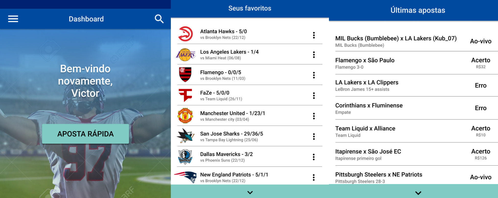
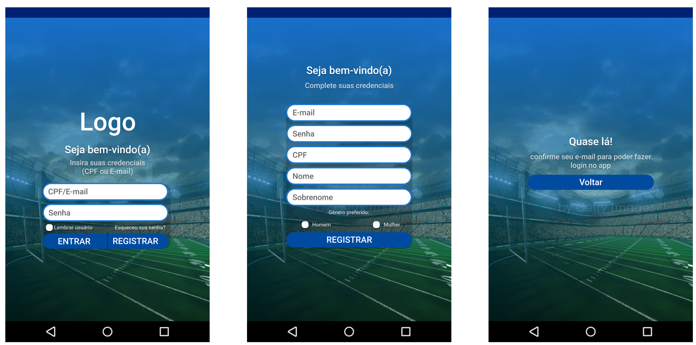
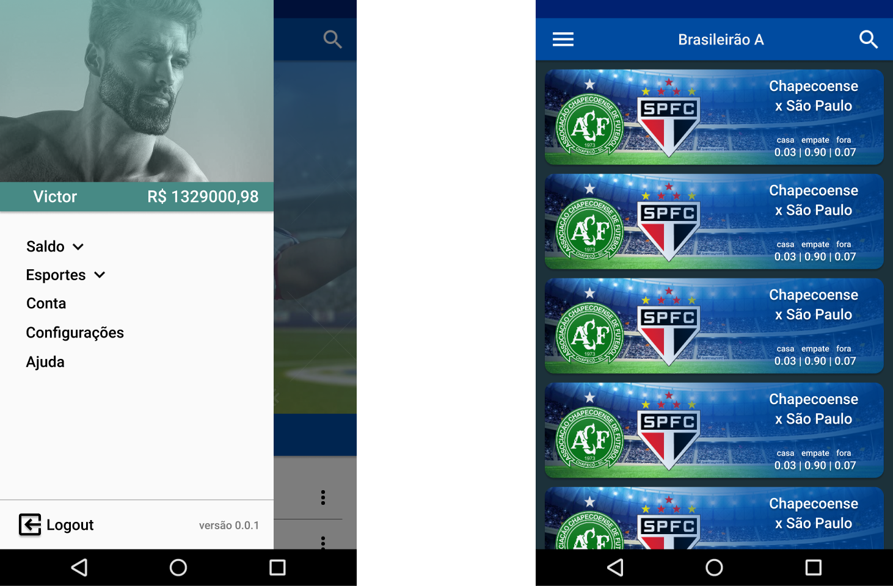

Platinum Bets
Aplicativo de apostas esportivas, desenvolvido em Flutter, como assignment em uma cadeira que cursei no IFCE
Geral
O aplicativo conta com 4 telas principais: uma tela de Dashboard, que funciona como a homepage do aplicativo e fornece funções importantes ao usuário, uma sidebar drawer com informações do usuário e função de navegação, e uma tela de apostas, onde o código para a realização da função principal do aplicativo, apostar, é executado. A quarta tela é a de login e registro, utilizando o Firebase authentication para o processamento dos logins.
A sequência de imagens acima compõem a tela de Dashboard, onde o usuário tem acesso a uma tela scrollable, podendo rolar para baixo para revelar as funções da página.
A sequência de imagens acima desmontra as telas relacionadas ao login e ao registro.
A sequência de imagens acima demonstra a sidebar do aplicativo, mostrando algumas informações do usuário, e permitindo que ele navegue pelo aplicativo
Desenvolvimento e Participação
O aplicativo foi um trabalho em grupo. Fui o líder do grupo, criando, separando e dirigindo as tarefas a serem realizadas, além de ser o principal designer e o principal programador.
Para a fase de planejamento do aplicativo, utilizamos ferramentas e modelos populares no mercado, como diagrama de classe e scrum, utilizando o GitHub como ferramenta de compartilhamento de código e de gerenciamento das tarefas da equipe. Para o desenvolvimento, o Flutter foi nossa ferramenta de escolha como framework, e utilizamos o banco de dados Firestore, do Firebase.
Aprendizados e Observações
Tivemos alguma dificuldade com o projeto, pois 2 membros dos 5 originais tiveram problemas pessoais, e tivemos que continuar o desenvolvimento com os membros restantes. Como foi o meu primeiro projeto com um escopo um pouco maior, foi um projeto onde vários aspectos poderiam ser melhorados, mas esses erros proporcionaram uma aprendizagem de grande valor.